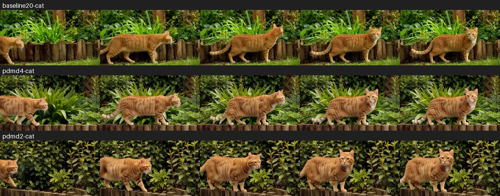
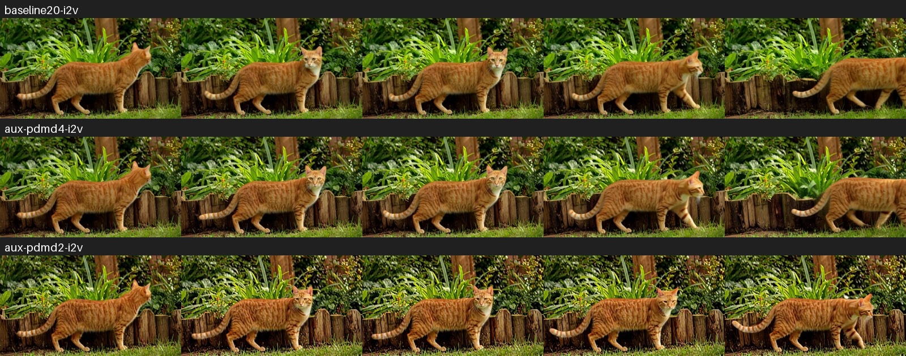

기존 20스텝
전체 171.8초 · 생성 계산 146.8초
4스텝 우선 검토, 2스텝 기본 적용 보류. Talk에 PDMD 4스텝 적용을 완료했습니다. 최종 대화방: PDMD4 적용 샘플 · 한국어 영상.
61번 DGX Spark · NVFP4 + ClipProj · 864×480 · 124프레임 · 24fps · 음성 포함. 장면별 프롬프트와 시드 동일.
각 조건 1회인 예비 비교입니다. 전체 시간은 인코딩·생성·VAE·저장을 포함하며, 모델 시작과 LoRA 설치는 제외합니다. 한국어 ASR: 기존/4스텝은 원문과 일치, 2스텝은 “보내세요”를 “보도세요”로 인식했습니다. ASR 결과만으로 실제 발음을 단정하지 않습니다. 직접 청취와 영상 재생으로 확인할 수 있습니다.
한국어 대사 ASR 일치 · 검증 샘플과 파일 해시 일치 · 864×480 / 124프레임 / 음성 포함
전체 171.8초 · 생성 계산 146.8초
전체 69.3초 · 생성 계산 45.1초
전체 46.4초 · 생성 계산 22.6초

전체 165.9초 · 생성 계산 144.1초
전체 66.2초 · 생성 계산 44.8초
전체 43.8초 · 생성 계산 22.9초
전체 178.6초 · 생성 계산 157.1초
전체 68.2초 · 생성 계산 47.1초
전체 45.9초 · 생성 계산 23.8초
